Curriculum Vitae
Jasper van BloklandMA
Designer
Educator
Programmer
I am driven to simplify content into clear and understandable images
© 2018
info[at]jvb.com
The Netherlands
Breda
06 245 27 440
Expertise
Motion Design
Conditional Design
Illustration
Graphic Design
Soft Skills
Team-player
Communicator
Driven
Enthusiastic
Problem solver
Brainstormer
Technical skills
Python
Processing
HTML
CSS3
SASS
Markdown
Adobe
Sketch
Summer 2018
Conditional illustration
Illustrations
Conditions
Try & Error
Repitition
Black & White
Meditation
Fineliner
Skylines
These drawing are made by a repetition of visual conditions
2017 - 2018
Conditional animation
Master Animation
Illustrations
Conditions
Efficientie
Typography
Movement
Collaboration
Poster & conditional generated visuals
The research in Parametric Animation explores the role of animation and movement in the (graphic) design process. Generated by Parametric Animation, the outcomes are variations of a design which uses principles of animation and movement, intended for Graphic Designers.
Process illustrations
Several parties were involved in this research. Testing and discussing the use of parametric animation with them made a great contribution to the research, which resulted in an application that will generate different designs based on formulated conditions.
2015 - 2016
Microplastic
Bachelor Graphic Design
Identity
Infographic
Collaboration Ocean Cleanup
Exposition Bachelor Graduation
For the Graduation Bachelor Graphic Design I made a Infographic about the sea pollution, based on data and research from the Ocean Cleanup Rapport 2014
Pictogram illustrations
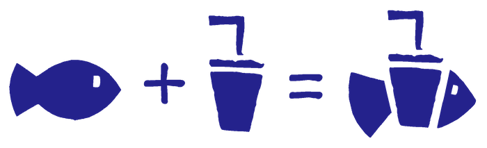

Maquette experiments


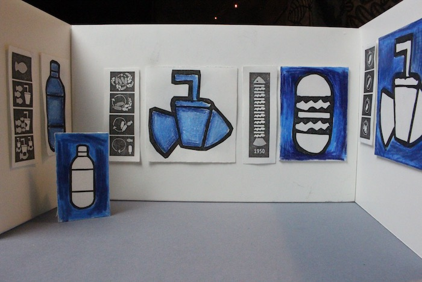
Proces illustrations
 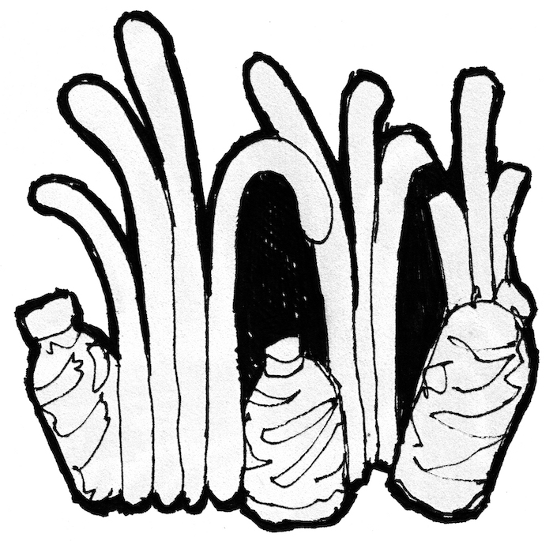
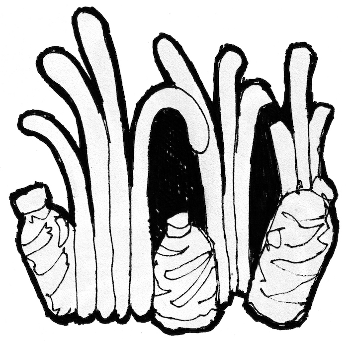

2015 - 2016
Stereotype Scientists
Co-Founder Introscience NL
Identity
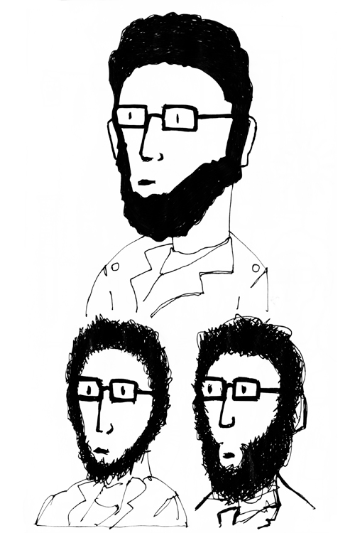
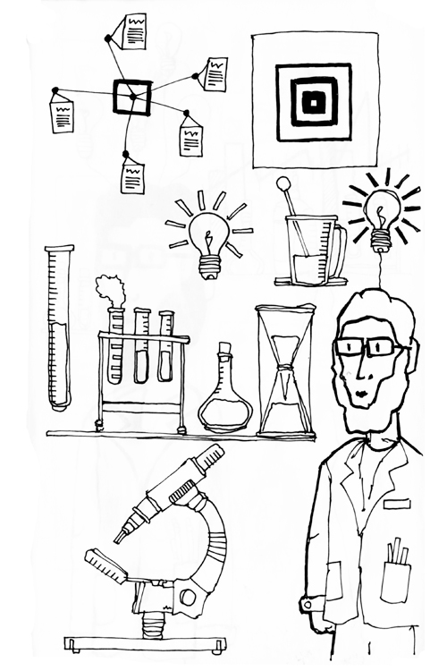


2015
Chaotic selfportraits
Illustration
Self-portrait
Summer 2014
Ornaments
Illustration
Experiments
Shading


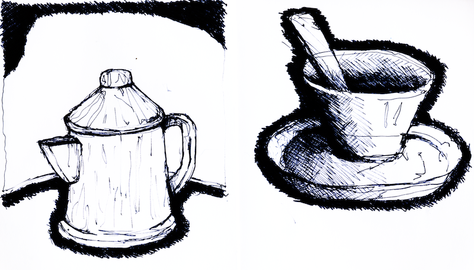
2014 - 2015
Way-finding icons
Illustration
Identity
WayFinding Delft
Map experiments
Pictogram illustrations
2014 - 2015
Brand proces illustrations
Identity
2012 - 2013
Croatia holiday
Holiday
Meditation
Summer 2012
Ornaments
Holiday
Meditation
Summer 2012
Just some random comics
2008 - 2009
Responsive web educator
2004 - 2005
Graphs experiments
Monoprint
Black & White
Leaves
|
|
|
|
| 2016 - 2018 |
Conditional Animation |
Master |
AKV St Joost - Avans University of applied science |
| 2013 - 2016 |
Generative Design |
Bachelor |
AKV St Joost - Avans University of applied science |
| 2011 - 2012 |
Graphic Design |
Propedeuse |
Royal Academy of Art The Hague |
| 2003 - 2011 |
School for Young Talent |
High School |
Royal Academy of Art The Hague |
| 2017 Februari 17th |
Training in entrepreneurship |
Certificate |
Starterslift |
| 2016 - 2017 |
Support in entrepreneurship |
Business Support |
Business Atelier |
Master thesis: “Conditional Animation - Designing with animation makes the design proces a lot easier and more efficient”
© 2018
info[at]jvb.com
The Netherlands
Breda
06 245 27 440
 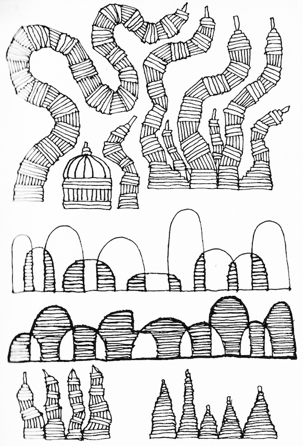
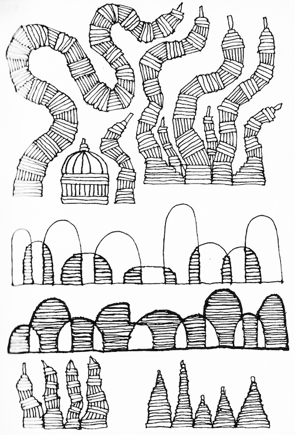


 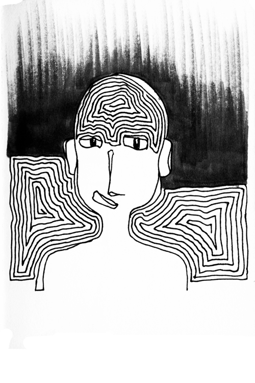
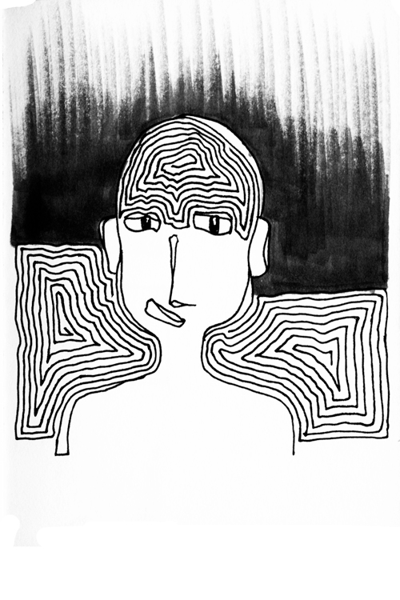


 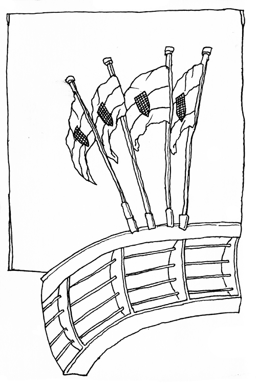
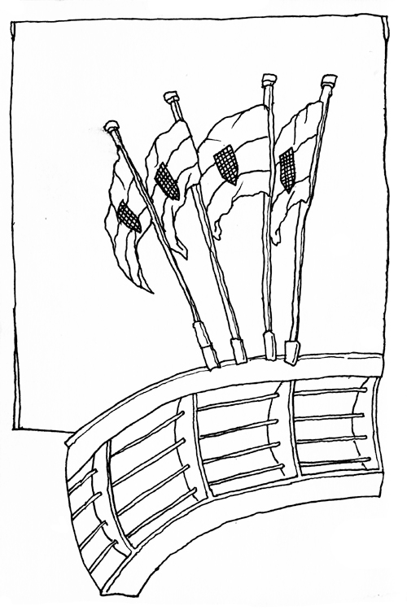


 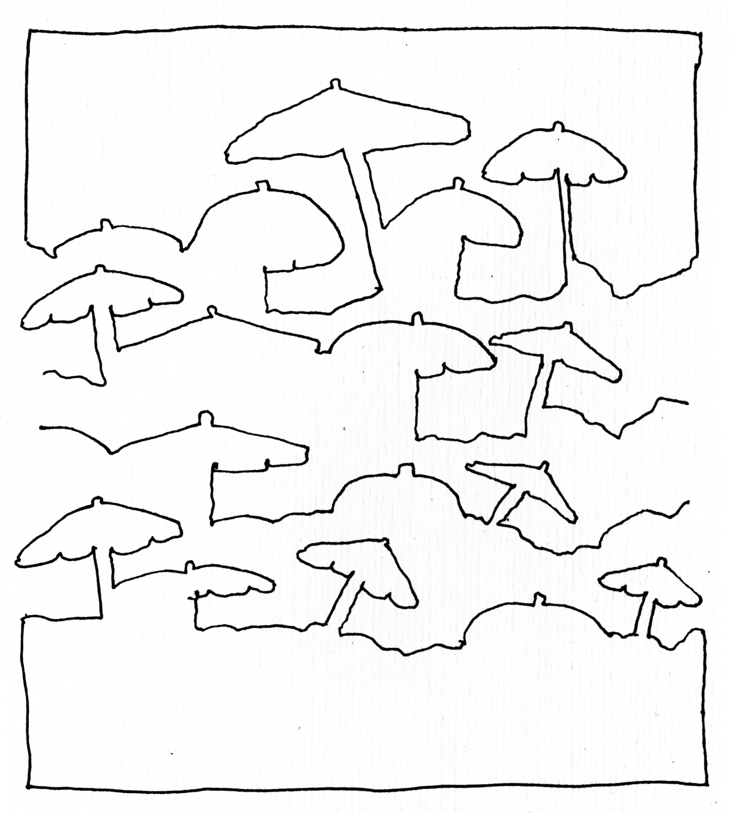
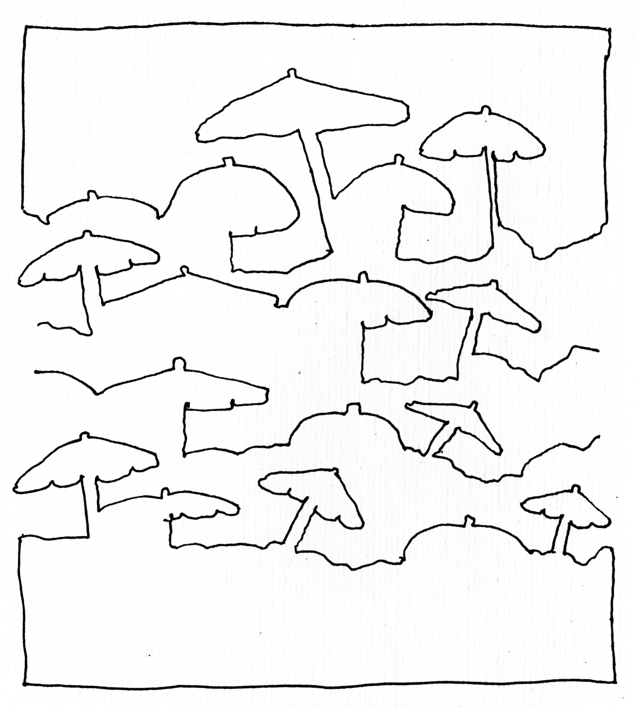


 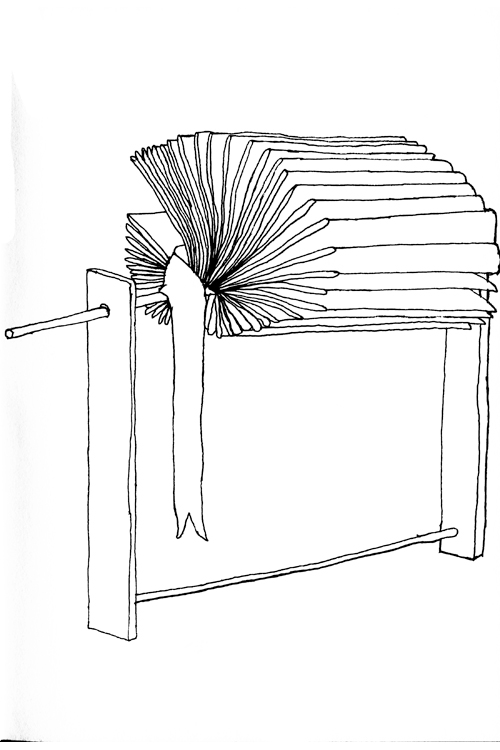
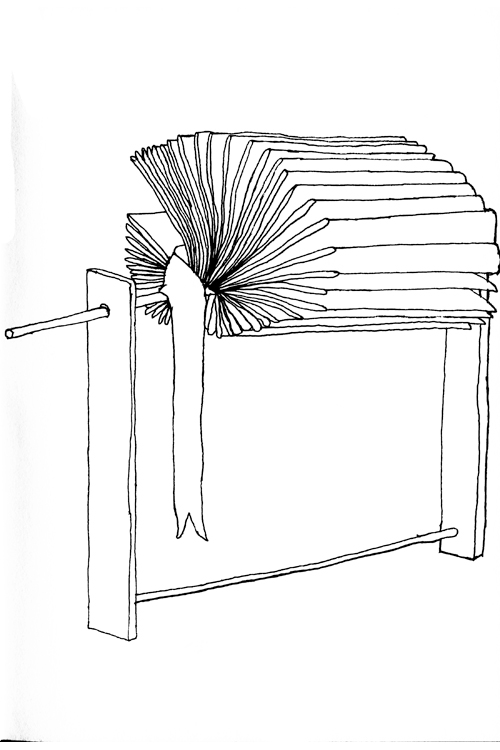


 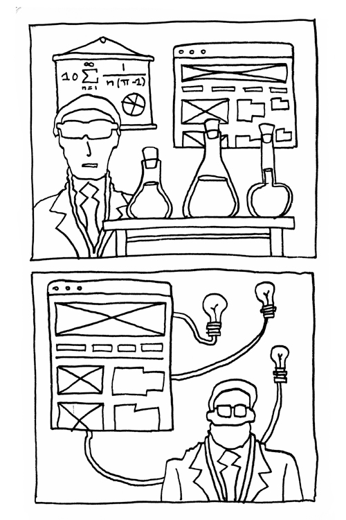
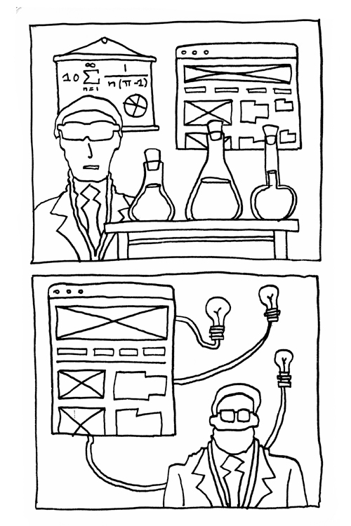